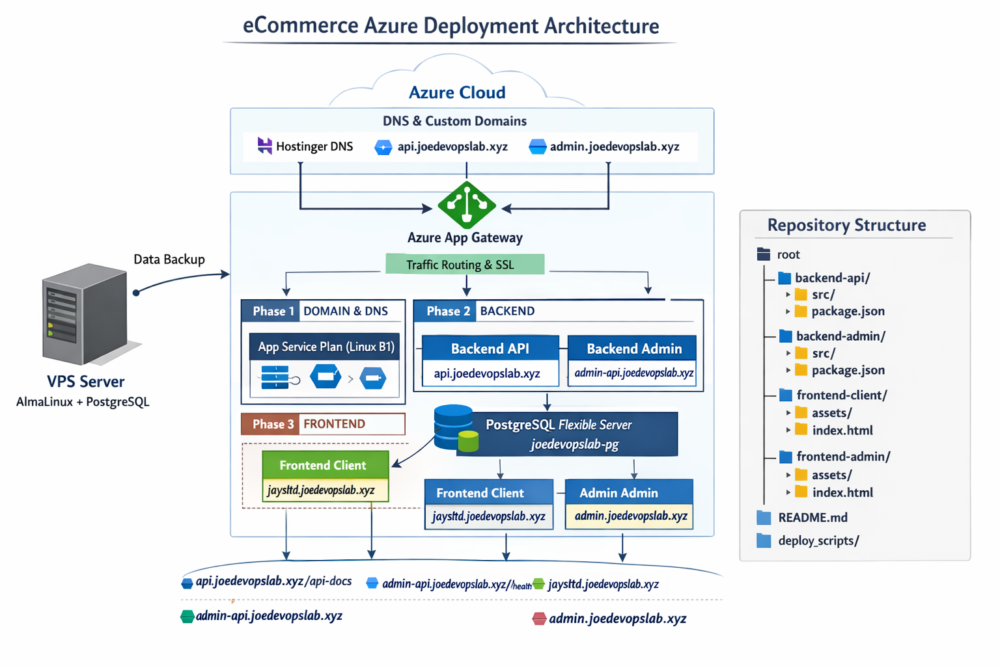
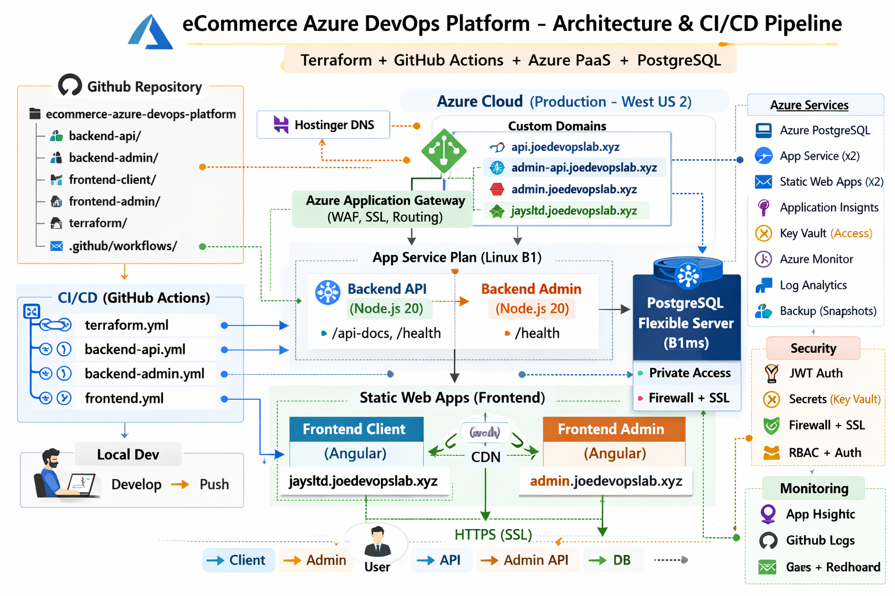

Production-style migration of an eCommerce application from a VPS environment to Microsoft Azure PaaS using Terraform, GitHub Actions, Azure App Services, PostgreSQL Flexible Server, and modern DevOps automation practices.
Migration Architecture

Architecture

Project Overview
This project demonstrates a real-world cloud migration of an eCommerce
application from a traditional VPS-based environment to a modern
Microsoft Azure Platform-as-a-Service (PaaS) architecture.
The solution leverages Terraform for Infrastructure as Code,
GitHub Actions for CI/CD automation, Azure App Services for backend
applications, Azure Static Web Apps for frontend hosting, and Azure
PostgreSQL Flexible Server for managed database services.
The project focuses on cloud modernization, deployment automation,
security hardening, infrastructure provisioning, database migration,
and production-ready operational practices.
Technology Stack
Microsoft AzureTerraformGitHub ActionsAzure App ServiceAzure Static Web AppsAzure PostgreSQL Flexible ServerApplication InsightsNode.jsAngular
Key Features
Migration from VPS infrastructure to Azure PaaS architecture
Infrastructure provisioning using Terraform
Fully automated CI/CD pipelines with GitHub Actions
Backend deployment using Azure App Services
Frontend deployment using Azure Static Web Apps
Managed PostgreSQL database using Azure Flexible Server
Automated infrastructure and application deployments
Application monitoring using Azure Application Insights
Secure secrets and environment variable management
PostgreSQL database migration using dump-and-restore strategy
HTTPS-enabled production deployments
Security-hardened cloud infrastructure and firewall configuration
Health check validation within deployment pipelines
Production-ready Azure architecture design
DevOps Highlights
Designed and implemented Azure PaaS architecture
Automated infrastructure provisioning with Terraform
Built multi-stage GitHub Actions deployment pipelines
Migrated PostgreSQL database from VPS to Azure
Implemented secure cloud networking and firewall rules
Integrated application monitoring and health validation
Managed production-grade deployment workflows
Applied cloud security and operational best practices
Project Outcome
This project demonstrates end-to-end cloud migration, Infrastructure as Code,
CI/CD automation, database migration, and production-ready Azure operations.
It showcases practical experience with Azure PaaS services, deployment
automation, security hardening, and modern cloud-native application delivery.